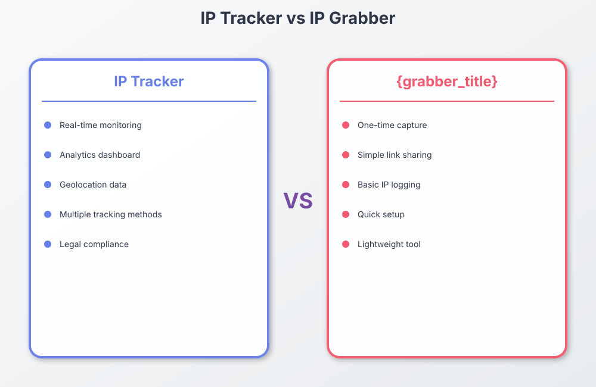

Table of Contents
- Introduction to IP Tracking Tools
- What is an IP Tracker?
- What is an IP Grabber?
- IP Tracker vs IP Grabber: Key Differences
- When to Use Each Tool: Practical Use Cases
- Implementation Methods
- Privacy and Legal Considerations
- Best Practices for Responsible Use
- Top IP Tracker and IP Grabber Tools
- Conclusion
Introduction to IP Tracking Tools
IP Tracking Process Flow

Interactive Flow Diagram
In today's digital landscape, understanding who is visiting your website, clicking your links, or opening your emails provides valuable insights for businesses, content creators, and security professionals. Two primary tools used for this purpose are IP trackers and IP grabbers . While these terms are often used interchangeably, they represent distinct approaches to collecting IP address information, each with specific use cases, implementation methods, and ethical considerations.
Whether you're a marketer trying to understand your audience. a security professional monitoring network activity. or a website owner looking to enhance user experience through 地理位置定位. und...
This comprehensive guide will explore the differences between IP trackers and IP grabbers. help you determine which tool is right for your needs. and provide implementation guidance that respects user privacy and complies with relevant regulations.
What is an IP Tracker?
An IP tracker is a monitoring system that collects and analyzes IP address information from visitors to a website, application, or digital resource. Unlike IP grabbers which are typically targeted at specific individuals, IP trackers are generally implemented as persistent systems that continuously collect data from all visitors.
Key Features of IP Trackers:
- Continuous monitoring: Tracks all visitors to a website or digital asset
- Data aggregation: Often combines IP data with other analytics information
- Visualization tools: Usually includes dashboards and reporting features
- Historical data: Maintains records of past visits for trend analysis
- Integration capabilities: Often works alongside other analytics platforms
IP trackers are typically implemented through JavaScript embedded in websites, server-side logging mechanisms, or through third-party Data Analytics services. They collect not only the IP address but often additional information such as:
- Geographic location (country, city, region)
- Internet Service Provider (ISP)
- Device type and operating system
- Browser information
- Referring URLs
- Visit duration and page views
The data collected by IP trackers is typically visualized through dashboards and reports. allowing users to analyze visitor patterns. geographic distribution. and engagement metrics over time.
What is an IP Grabber?
An IP grabber is a tool specifically designed to capture the IP address of a particular individual or target when they interact with a specific link, image, or content. Unlike IP trackers which monitor all traffic to a website, IP grabbers are typically used for more targeted scenarios where you need to identify the IP address of a specific user or visitor.
Key Features of IP Grabbers:
- On-demand capture: Collects information only when a specific link or resource is accessed
- Targeted approach: Designed to capture information from specific individuals
- Unique identifiers: Usually generates unique tracking links or resources
- Immediate notification: Often includes alert systems when the target accesses the resource
- Minimal infrastructure: Typically requires less complex setup than full tracking systems
IP grabbers are commonly implemented through:
- Specialized URL shorteners with tracking capabilities
- Tracking pixels embedded in emails
- Web beacons in HTML content
- Specially crafted images that load from a server that logs IP information
- Redirect services that log information before sending users to the destination
When the target interacts with the IP grabber (by clicking a link, loading an image, etc. ), their IP address is recorded along with related data. Many IP grabber services will then notify the creator and provide a report with the collected information.
IP Tracker vs IP Grabber: Key Differences
While both tools collect IP address information, there are significant differences in their purpose, implementation, and typical use cases:
IP Tracking Process Flow
Interactive Flow Diagram
IP Tracker
- Scope: Monitors all visitors
- Duration: Continuous operation
- Implementation: Site-wide analytics
- Data: Aggregated analytics focus
- Complexity: Higher (more comprehensive)
- Visibility: Typically disclosed in privacy policies
- Primary users: Businesses, website owners, marketers
IP Grabber
- Scope: Targets specific individuals
- Duration: On-demand, case-by-case basis
- Implementation: Specific links or resources
- Data: Individual-specific focus
- Complexity: Lower (more targeted)
- Visibility: Often less transparent to end-users
- Primary users: Security teams, fraud investigators, specific case monitoring
The distinction is important not only from a technical perspective but also from legal and ethical standpoints. IP trackers, being more transparent and often disclosed in privacy policies, t...
When to Use Each Tool: Practical Use Cases
Different scenarios call for different approaches to IP information collection. Here's a breakdown of when each tool is most appropriate:
IP Tracker Use Cases:
Website Analytics
Understanding visitor demographics, geographic distribution, and behavior patterns across your entire website.
Content Localization
Automatically serving region-specific content based on visitor location detected via IP address.
Security Monitoring
Identifying suspicious patterns or blocking traffic from known malicious IP ranges.
E-commerce Optimization
Displaying appropriate currency, shipping options, and tax information based on customer location.
Marketing Campaign Analysis
Measuring the geographic effectiveness of marketing efforts across different regions.
Performance Optimization
Identifying and addressing performance issues for users in specific regions.
IP Grabber Use Cases:
Email Tracking
Verifying when a specific recipient has opened an important email and their approximate location.
Link Tracking
Monitoring when a specific individual clicks on a shared link or accessing shared resources.
Account Security
Verifying unusual login locations that might indicate unauthorized account access.
Document Tracking
Monitoring when sensitive documents are accessed and from where.
Fraud Investigation
Gathering evidence in cases of online fraud, scams, or harassment.
Developer Testing
Testing location-specific features during development by verifying IP detection.
Implementation Methods
Both IP trackers and IP grabbers can be implemented through various methods, depending on your technical capabilities and specific requirements.
IP Tracker Implementation:
1. Server-Side Logging
Implement IP tracking directly on your web server using built-in logging capabilities:
2. JavaScript-Based Analytics
Use JavaScript to collect and send IP and other visitor data to a tracking service:
3. PHP-Based Tracking
Create a custom tracking solution using server-side PHP:
IP Grabber Implementation:
1. Tracking Link Generation
Create a redirect script that logs IP information before forwarding to the destination:
2. Email Tracking Pixel
Create a transparent 1x1 pixel image that logs when an email is opened:
3. Using Node.js for a Real-time IP Grabber:
Important Implementation Considerations:
- Always include appropriate privacy notices when implementing any tracking system
- Consider implementing an opt-out mechanism for users
- Store collected data securely and encrypt sensitive information
- Establish data retention policies that comply with relevant regulations
- Test your implementation thoroughly to ensure accuracy and reliability
Privacy and Legal Considerations
IP address information is considered personal data under many privacy regulations. including the European Union's General Data Protection Regulation (欧盟数据保护条例). the California Consumer Priv...
Transparency Requirements
- Disclose IP tracking in your privacy policy
- Explain what data is collected and how it's used
- Provide information about data retention periods
- Identify third parties with whom data is shared
Consent Considerations
- 欧盟数据保护条例 may require explicit consent for non-essential tracking
- Cookie banners should include information about IP tracking
- Provide genuine opt-out mechanisms
- Respect Do Not Track (DNT) browser settings
Data Security Requirements
- Implement appropriate security measures for stored IP data
- Encrypt sensitive information in transit and at rest
- Limit access to IP data on a need-to-know basis
- Establish incident response procedures for data breaches
Rights of Data Subjects
- Respect individuals' right to access their data
- Honor deletion requests (right to be forgotten)
- Provide mechanisms for data portability
- Allow individuals to object to processing
IP grabbers, in particular, raise additional ethical considerations due to their targeted nature. Using IP grabbers for harassment, stalking, or other malicious purposes is not only unethica...
Best Practices for Responsible Use
To balance the benefits of IP tracking with respect for user privacy and legal 合规, follow these best practices:
For IP Trackers:
- Minimize data collection: Only collect IP data that serves a specific, legitimate purpose
- Set appropriate retention periods: Don't store IP data longer than necessary
- Anonymize when possible: Consider if partial IP addresses or anonymized data would serve your needs
- Be transparent: Clearly disclose your tracking practices in your privacy policy
- Respect user choices: Honor opt-out requests and privacy settings
For IP Grabbers:
- Obtain consent when appropriate: Consider informing the target when collecting their IP
- Limit use to legitimate purposes: Only use IP grabbers for legal, ethical purposes
- Secure collected data: Implement strong security measures for stored IP information
- Delete data promptly: Remove IP information once it has served its purpose
- Avoid deceptive practices: Don't use misleading tactics to collect IP addresses
By following these best practices, you can derive value from IP tracking while maintaining ethical standards and legal 合规.
Top IP Tracker and IP Grabber Tools
Whether you're looking for a commercial solution or planning to build your own, here are some of the most popular tools in each category:
IP Tracking Tools:
Google Analytics
The industry standard for website Data Analytics that includes IP-based location tracking.
Best for: Comprehensive website analytics with IP location as one component
Visitor Analytics
欧盟数据保护条例-compliant Data Analytics platform with strong IP-based visitor tracking features.
Best for: Businesses needing compliant visitor tracking with clear visualizations
Statcounter
Detailed visitor tracking with comprehensive IP information and real-time monitoring.
Best for: Real-time visitor tracking with detailed individual session data
IP Logger
Web-based service specializing in IP tracking with various implementation options.
Best for: Dedicated IP tracking with minimal setup requirements
IP Grabber Tools:
Grabify
Popular IP logger that creates trackable links and provides detailed information on clicks.
Best for: Creating tracking links with comprehensive reporting
IP Hub
Offers both IP tracking and IP grabbing services with additional threat detection.
Best for: Security-focused IP tracking with detailed reporting
WhatsTheirIP
Our own service providing customizable tracking links, email pixels, and real-time notifications.
Best for: Professional use cases requiring reliable, ethical IP tracking
Open Source Solutions
Customizable open-source scripts and tools for implementing your own IP grabbing solution.
Best for: Developers needing full control over implementation and data
Conclusion
Both IP trackers and IP grabbers serve valuable purposes in different contexts. IP trackers provide broad insights into website visitors and user behavior, making them ideal for Data Analytics, market...
When implementing either solution, the key considerations should be:
- Selecting the right tool for your specific use case
- Implementing the solution with appropriate technical safeguards
- Ensuring 合规 with relevant privacy regulations
- Following ethical best practices for data collection and use
- Maintaining transparency with your users about tracking practices
By understanding the differences between IP trackers and IP grabbers and implementing them responsibly. you can gain valuable insights while respecting user privacy and maintaining legal 合规.
Try Our Tools:
At WhatsTheirIP, we offer both IP tracking and IP grabbing solutions designed with privacy and 合规 in mind:
- URL Tracker - Create tracked links that record visitor IP information
- Email Tracker - Monitor when recipients open your emails and their location
All our tools come with comprehensive documentation, easy setup, and built-in privacy features.
About the Author
The WhatsTheirIP team specializes in IP tracking technologies, with a focus on ethical implementation and privacy-first approaches. We're dedicated to helping businesses and individuals understand the power and responsibilities of IP address tracking.